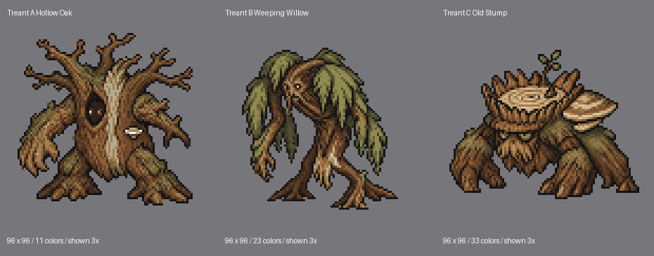
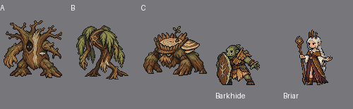

The six non-Treant designs are approved and preserved without edits. No new animations or playable kits have been made for them.

A: broad hollow oak. B: tall weeping willow. C: squat old stump. A has the simplest palette; B and C carry more internal texture than the current cast. These are distinct identity options awaiting selection.

A PNG · B PNG · C PNG · Technical manifest
Elven Thornkeeper, Orc Berserker, Orc Bloomcaller, Snapvine, Orc Drummer and Briar Archer. Their exact hashes are in the design lock. The original Ancient Treant is rejected.
Usage: 50 of 60 generations, including 15 for these alternatives; 10 remain. No credit purchases. No active generation jobs. Stop for Treant selection.